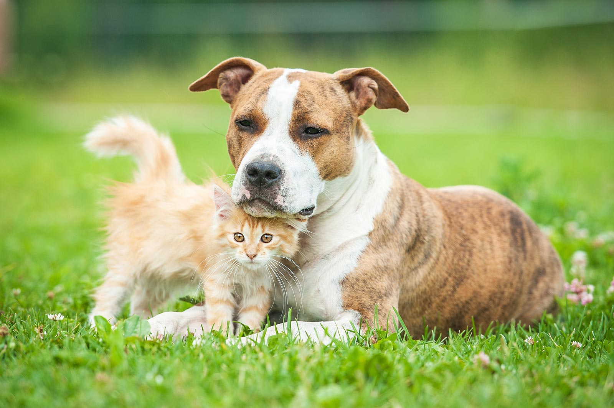
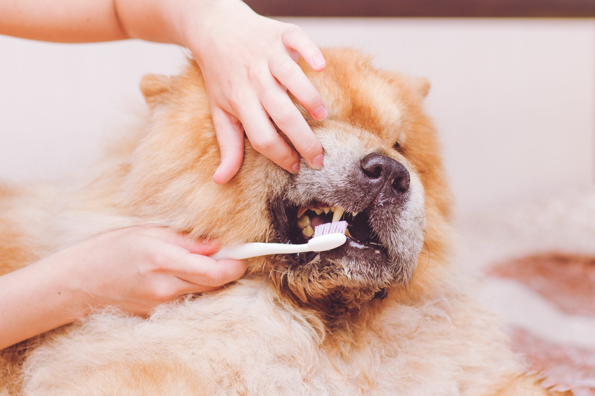

The confidence you need to keep your pets happy and healthy. Meet the Longmeadow team — three dedicated veterinarians and a caring support staff offering complete veterinary care to dogs and cats in the greater Hagerstown, Smithsburg and Leitersburg area.
Book an Appointment · (301) 733-8400 New Client Offer
We have offered the highest quality veterinary medical care to the greater Hagerstown, Smithsburg, Leitersburg area since 1971. We are dedicated to helping our companion animal friends live longer, healthier, and happier lives. Here at Longmeadow Animal Hospital, you will find our staff is not only friendly and inviting, but also very qualified. Our staff members are kind, understanding, and caring individuals who understand that a pet is more than just an animal — it is a friend.

Annual exams, vaccinations, diet & nutrition, and parasite control to keep pets on track.

Annual dental exams and cleanings under anesthesia, with full-mouth radiographs.

Spay & neuter, soft tissue and orthopedic surgery, plus laser surgery options.

In-house laboratory, radiography and diagnostic ultrasound for fast answers.
Led by Dr. Rebecca Gurshman (Cornell DVM, Medical Director), our doctors bring decades of experience in companion animal medicine and surgery.

Cornell University DVM · 24+ years in Maryland practice · with LAH since 2017

Hagerstown local · Midwestern University College of Veterinary Medicine

Tuskegee University DVM · 18+ years in companion animal medicine & surgery
Please mention this offer and promo code FURBABY at your visit. Limited time offer, valid for one visit per new client; cannot be combined with any other offers. Expires 12/31/26. Exclusions may apply.
Become a New Patient Call (301) 733-8400
Managing your pet's health care is simpler & more convenient with the PetOne Veterinary App — download it today.

Summer cookouts and fresh corn often go hand in hand. While corn itself isn't typically harmful, the cob is a different story — every year veterinary hospitals treat dogs (and occasionally curious cats) for serious emergencies caused by swallowing corn cobs.
To help prevent the spread of flu and COVID-19, we kindly ask clients experiencing symptoms to wear a mask when visiting our office. Our hospital remains open and continues to be an essential service for your pets.
Call us at (301) 733-8400 or text (301) 709-7251 — we're here for your pets.